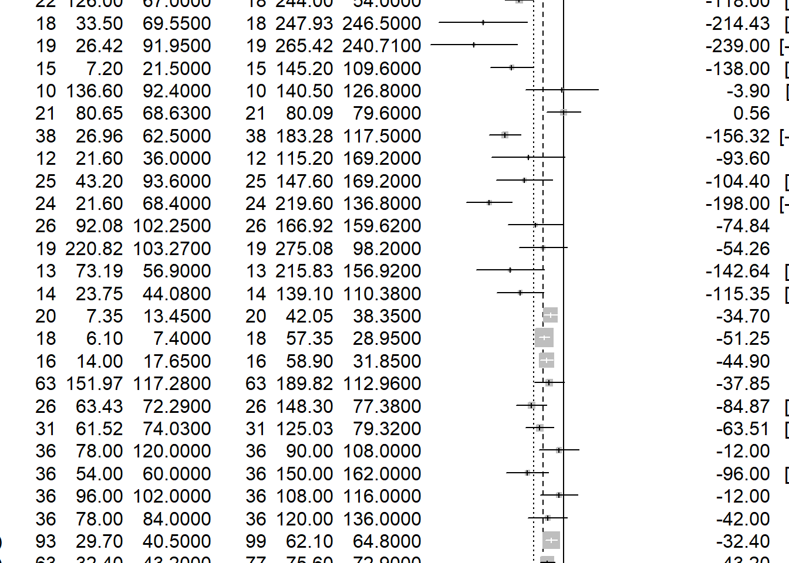

library(dplyr)
library(knitr)
library(meta)Metaanalysis Assignment
The study looks at various studies of children choosing what kind of toys they play with (stereotypically ‘boy-toys’ or stereotypically ‘girl-toys’). Mean times (in seconds) of playing are recorded, along with sample sizes and standard errors (for boys playing with each kind of toys and for girls playing with each kind of toys).
There’s also information about the studies (e.g. year) and a bit about quality.
Here’s authors’ descriptions to the data:
Neutral toys (1 = neutral toys included; 2 = neutral toys not included); Parent present (1 = absent; 2 = minimal interaction; 3 = moderate or full interaction); Setting = location of study (1 = home; 2 = laboratory; 3 = nursery); Country = gender inequality index, a measure of how gender egalitarian the country was at the time the study took place.
Note. Quality is assessed using Newcastle–Ottawa Quality Assessment Scale criteria adapted for this study. A star indicates that the study fulfilled this criterion; an X indicates that the study did not fulfil this criterion. Case definition adequate: clear justification for the gendered nature of a toy, for example, based on research. Representativeness of cases: recruitment of consecutive participants. Selection of controls: whether boys and girls were comparable in terms of social background. Parental opinion: whether parents’ views on gender were measured. Comparability of both groups: the toys were comparable (in size, shape, etc.) and if the boys and girls were comparable in age. Ascertainment of behaviour: Play behaviour was clearly defined. Same ascertainment method for both groups: The measurement of the outcome (time spent playing with toy) was clearly defined. Nonresponse rate: whether either nonuptake or dropout rates reported.
Experiment using what you’ve learned:
df <- readxl::read_xlsx("data\\metaanalysis_data.xlsx")
kable(head(df))| Study | Female authors | Male authors | Age (months) | N_boys | N_girls | Mean_boys_play_male | SD_boys_play_male | Mean_girls_play_male | SD_girls_play_male | Mean_boys_play_female | SD_boys_play_female | Mean_girls_play_female | SD_girls_play_female | Neutral toys | Year | Parent present | Setting | Country | Case definition adequate | Representativeness of cases | Selection of controls | Parental opinion | Comparability of both groups | Ascertainment of behaviour | Same ascertainment method for both groups | Non‐response rate | NOS score |
|---|---|---|---|---|---|---|---|---|---|---|---|---|---|---|---|---|---|---|---|---|---|---|---|---|---|---|---|
| Alexander & Saenz (2012) | 2 | 0 | 19.50 | 47 | 47 | 438.72 | 166.08 | 248.64 | 161.28 | 377.28 | 170.88 | 538.56 | 214.08 | 1 | 2012 | 3 | 2 | 0.256 | * | * | X | X | * | * | * | X | 5 |
| Arthur (2014) | 1 | 0 | 19.00 | 22 | 18 | 148.00 | 105.00 | 54.00 | 53.00 | 126.00 | 67.00 | 244.00 | 54.00 | 0 | 2014 | 2 | 2 | 0.280 | * | X | X | X | ** | * | * | * | 6 |
| Berenbaum & Hines (1992) | 2 | 0 | 65.79 | 18 | 18 | 325.25 | 270.21 | 135.13 | 201.72 | 33.50 | 69.55 | 247.93 | 246.50 | 1 | 1992 | 2 | 2 | 0.252 | X | * | * | * | * | * | * | X | 6 |
| Berenbaum & Snyder (1995) | 2 | 0 | 93.10 | 19 | 19 | 484.21 | 141.28 | 202.48 | 168.14 | 26.42 | 91.95 | 265.42 | 240.71 | 1 | 1995 | 2 | 1 | 0.252 | * | X | * | * | * | * | * | * | 7 |
| Doering et al (1989) | 1 | 3 | 87.00 | 15 | 15 | 260.10 | 67.70 | 98.40 | 101.30 | 7.20 | 21.50 | 145.20 | 109.60 | 1 | 1989 | 1 | 2 | 0.141 | * | * | * | X | * | * | * | X | 6 |
| Idle et al. (1993) | 2 | 1 | 46.00 | 10 | 10 | 393.20 | 136.20 | 271.20 | 139.70 | 136.60 | 92.40 | 140.50 | 126.80 | 1 | 1993 | 3 | 3 | 0.141 | * | * | * | * | 0 | * | * | * | 8 |
- combine the effects Let’s do a meta-analysis comparing boy toy preference (boys vs girls, time spent with boy toys):
# 1. Boys playing with male-stereotyped toys vs girls
m_boys_maletoys <- metacont(
n.e = df$N_boys,
mean.e = df$Mean_boys_play_male,
sd.e = df$SD_boys_play_male,
n.c = df$N_girls,
mean.c = df$Mean_girls_play_male,
sd.c = df$SD_girls_play_male,
studlab = df$Study,
data = df,
sm = "MD",
method.tau = "REML"
)
# 2. Boys playing with female-stereotyped toys vs girls
m_boys_femaletoys <- metacont(
n.e = df$N_boys,
mean.e = df$Mean_boys_play_female,
sd.e = df$SD_boys_play_female,
n.c = df$N_girls,
mean.c = df$Mean_girls_play_female,
sd.c = df$SD_girls_play_female,
studlab = df$Study,
data = df,
sm = "MD",
method.tau = "REML"
)
# 3. Girls with female toys (girls vs boys)
m_girls_femaletoys <- metacont(
n.e = df$N_girls,
mean.e = df$Mean_girls_play_female,
sd.e = df$SD_girls_play_female,
n.c = df$N_boys,
mean.c = df$Mean_boys_play_female,
sd.c = df$SD_boys_play_female,
studlab = df$Study,
data = df,
sm = "MD",
method.tau = "REML"
)
# 4. Girls with male toys (girls vs boys)
m_girls_maletoys <- metacont(
n.e = df$N_girls,
mean.e = df$Mean_girls_play_male,
sd.e = df$SD_girls_play_male,
n.c = df$N_boys,
mean.c = df$Mean_boys_play_male,
sd.c = df$SD_boys_play_male,
studlab = df$Study,
data = df,
sm = "MD",
method.tau = "REML"
)Forest plot for Boys with Male toys
forest(m_boys_maletoys, main = "Boys with Male Toys", sortvar = TE)m_boys_femaletoys %>% forest()
m_girls_maletoys%>% forest()m_girls_femaletoys%>% forest()- create a funnel plot (what do you see?)
# Funnel plot for boys playing with male-stereotyped toys
funnel(m_boys_maletoys, main = "Funnel Plot: Boys with Male Toys")metabias(m_boys_maletoys, method.bias = "linreg") # Egger's testLinear regression test of funnel plot asymmetry
Test result: t = 5.63, df = 25, p-value < 0.0001
Bias estimate: 3.6625 (SE = 0.6506)
Details:
- multiplicative residual heterogeneity variance (tau^2 = 3.8102)
- predictor: standard error
- weight: inverse variance
- reference: Egger et al. (1997), BMJm_boys_femaletoys%>% funnel()- check if methods / quality affect the results
meta_reg <- metareg(m_boys_maletoys,
~ `Year` + `Neutral toys` + `Country` + `Age (months)` +
`Female authors` + `Male authors`)
summary(meta_reg)
Mixed-Effects Model (k = 26; tau^2 estimator: REML)
logLik deviance AIC BIC AICc
-100.9575 201.9151 217.9151 225.4706 232.3151
tau^2 (estimated amount of residual heterogeneity): 1444.0790 (SE = 658.9666)
tau (square root of estimated tau^2 value): 38.0010
I^2 (residual heterogeneity / unaccounted variability): 85.07%
H^2 (unaccounted variability / sampling variability): 6.70
R^2 (amount of heterogeneity accounted for): 68.53%
Test for Residual Heterogeneity:
QE(df = 19) = 66.9306, p-val < .0001
Test of Moderators (coefficients 2:7):
QM(df = 6) = 39.6876, p-val < .0001
Model Results:
estimate se zval pval ci.lb ci.ub
intrcpt 5694.6371 3396.7267 1.6765 0.0936 -962.8249 12352.0992
Year -2.8016 1.6921 -1.6557 0.0978 -6.1180 0.5148
`Neutral toys` 52.5836 31.7825 1.6545 0.0980 -9.7090 114.8762
Country 119.9741 135.5242 0.8853 0.3760 -145.6484 385.5966
`Age (months)` 0.9698 0.4785 2.0269 0.0427 0.0320 1.9076
`Female authors` -31.6378 14.5968 -2.1674 0.0302 -60.2470 -3.0286
`Male authors` 0.9919 10.0099 0.0991 0.9211 -18.6271 20.6108
intrcpt .
Year .
`Neutral toys` .
Country
`Age (months)` *
`Female authors` *
`Male authors`
---
Signif. codes: 0 '***' 0.001 '**' 0.01 '*' 0.05 '.' 0.1 ' ' 1- does author gender affect it?
metareg(m_boys_maletoys,
~ Year + `Neutral toys` + Country + `Age (months)` +
`Female authors` + `Male authors`)
Mixed-Effects Model (k = 26; tau^2 estimator: REML)
tau^2 (estimated amount of residual heterogeneity): 1444.0790 (SE = 658.9666)
tau (square root of estimated tau^2 value): 38.0010
I^2 (residual heterogeneity / unaccounted variability): 85.07%
H^2 (unaccounted variability / sampling variability): 6.70
R^2 (amount of heterogeneity accounted for): 68.53%
Test for Residual Heterogeneity:
QE(df = 19) = 66.9306, p-val < .0001
Test of Moderators (coefficients 2:7):
QM(df = 6) = 39.6876, p-val < .0001
Model Results:
estimate se zval pval ci.lb ci.ub
intrcpt 5694.6371 3396.7267 1.6765 0.0936 -962.8249 12352.0992
Year -2.8016 1.6921 -1.6557 0.0978 -6.1180 0.5148
`Neutral toys` 52.5836 31.7825 1.6545 0.0980 -9.7090 114.8762
Country 119.9741 135.5242 0.8853 0.3760 -145.6484 385.5966
`Age (months)` 0.9698 0.4785 2.0269 0.0427 0.0320 1.9076
`Female authors` -31.6378 14.5968 -2.1674 0.0302 -60.2470 -3.0286
`Male authors` 0.9919 10.0099 0.0991 0.9211 -18.6271 20.6108
intrcpt .
Year .
`Neutral toys` .
Country
`Age (months)` *
`Female authors` *
`Male authors`
---
Signif. codes: 0 '***' 0.001 '**' 0.01 '*' 0.05 '.' 0.1 ' ' 1Yes, author gender does appear to affect the results.
The number of female authors is significantly negatively associated with effect size (p = 0.0302). This means studies with more female authors report smaller differences between boys and girls in how much time they spend with male-typed toys.
In contrast, the number of male authors has no significant effect (p = 0.9211), indicating that simply having more male authors doesn’t change the reported results.
A possible interpretation is that female authors may be more cautious in interpreting or reporting strong gender differences in toy preferences, or may design studies differently (more neutral or balanced designs).